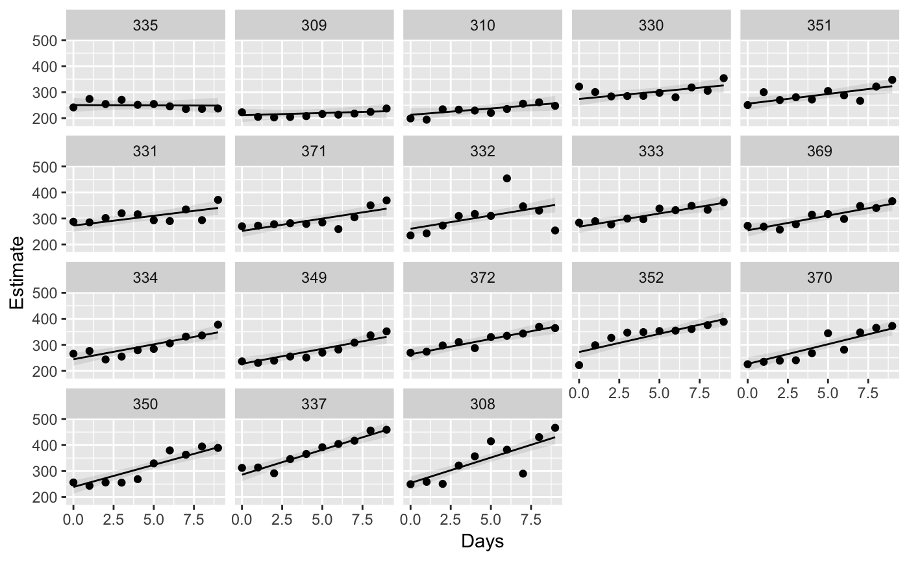
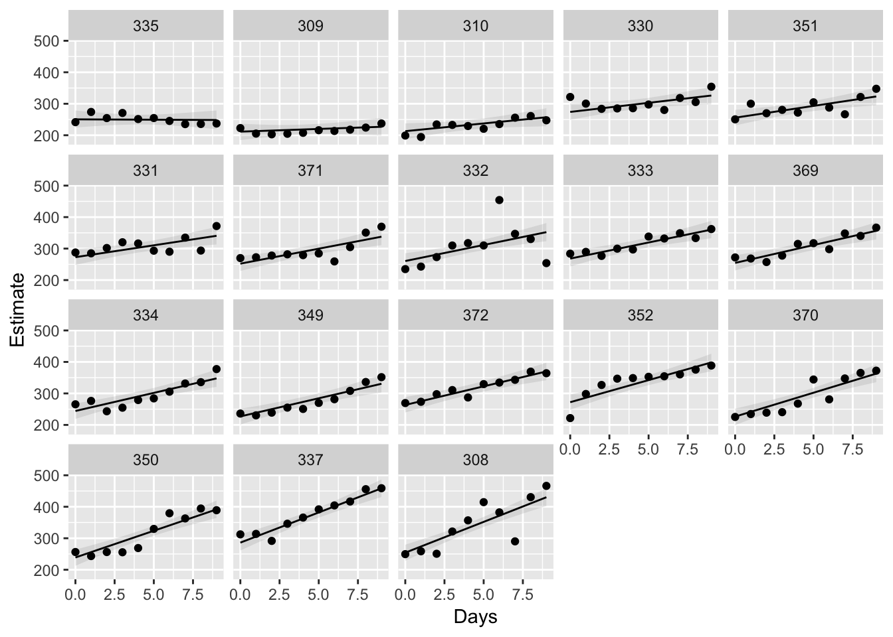
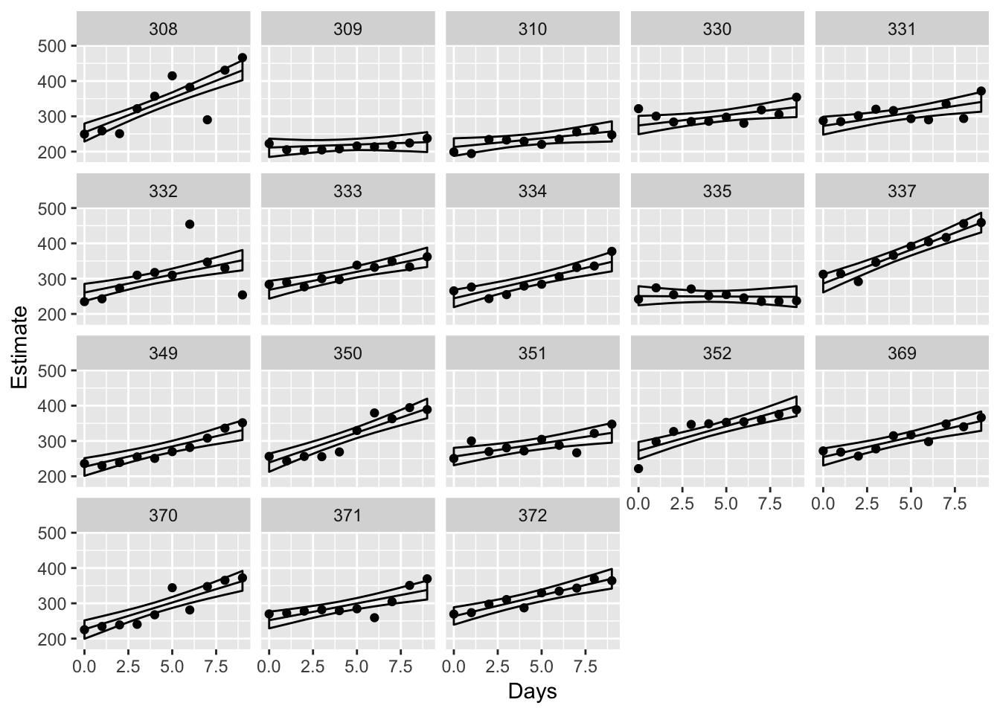

A panel plot displays each units data along with the model’s fitted values. Currently, the function only supports models with one predictor variable.
These functions rely on obtaining tidy tibbles of the model’s fitted values:
tidyfitted(fit_ml)
#> # A tibble: 190 x 7
#> Days Subject type Estimate Est.Error `2.5%ile` `97.5%ile`
#> <dbl> <fctr> <chr> <dbl> <dbl> <dbl> <dbl>
#> 1 0 308 r 254.2409 12.882455 228.5044 279.5504
#> 2 1 308 r 273.7942 11.038596 251.8504 295.5680
#> 3 2 308 r 293.3474 9.483224 274.7019 311.7569
#> 4 3 308 r 312.9007 8.378570 296.5008 329.2506
#> 5 4 308 r 332.4540 7.915637 316.6773 348.0713
#> 6 5 308 r 352.0073 8.203789 335.6809 367.7638
#> 7 6 308 r 371.5605 9.172512 353.3690 389.5057
#> 8 7 308 r 391.1138 10.637469 370.2497 411.8207
#> 9 8 308 r 410.6671 12.424352 386.5488 434.8250
#> 10 9 308 r 430.2204 14.413925 402.3105 458.4459
#> # ... with 180 more rowsUse panels() by setting a variable to be drawn on the x-axis (xvar), and (optional) parameter to sort the panels by:
panels(fit_ml, xvar = "Days", sort = "Days")
#> Warning: Column `Subject` joining factor and character vector, coercing
#> into character vector
Show data as points with `panels(…, data = T):
panels(fit_ml, xvar = "Days", sort = "Days", data = T)
#> Warning: Column `Subject` joining factor and character vector, coercing
#> into character vector
There are other options (see ?panels):
